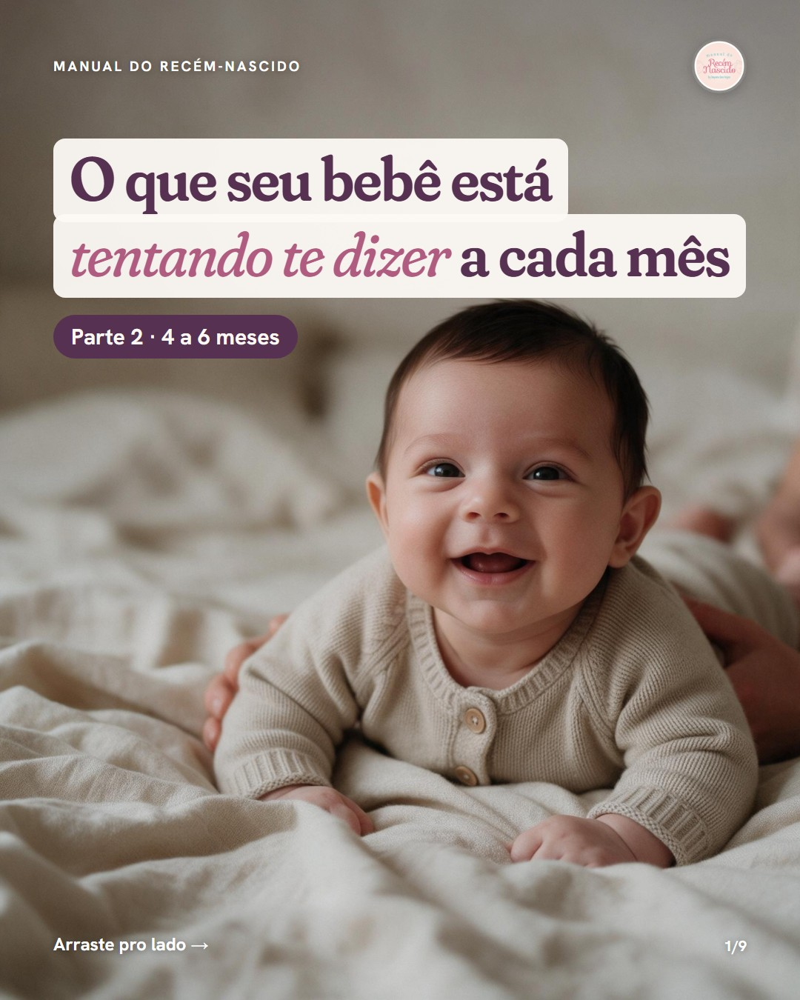
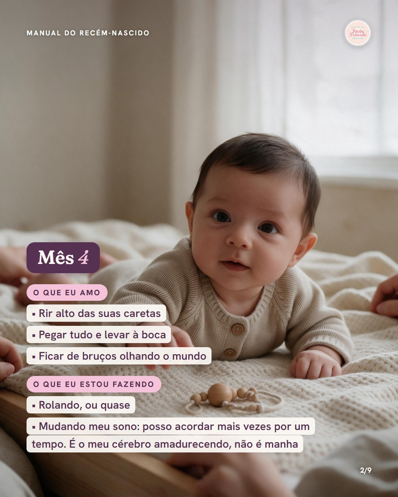
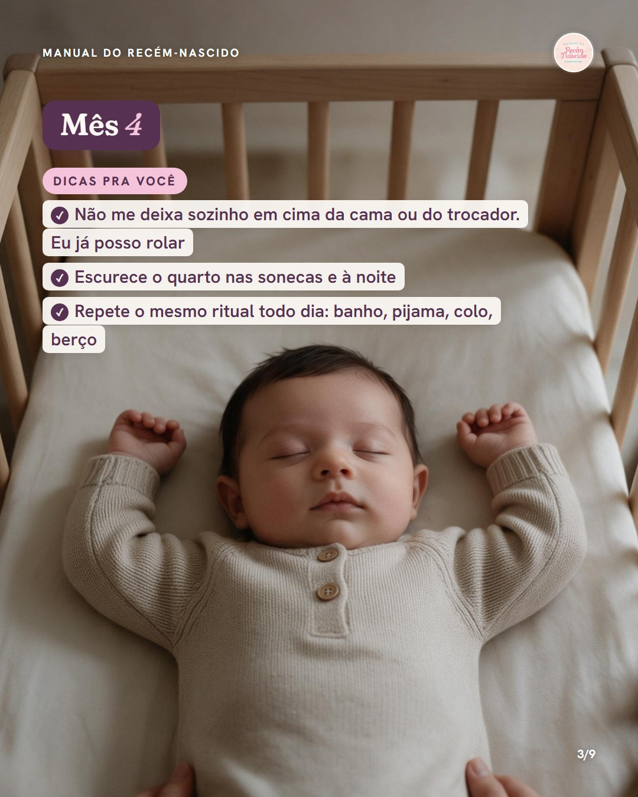
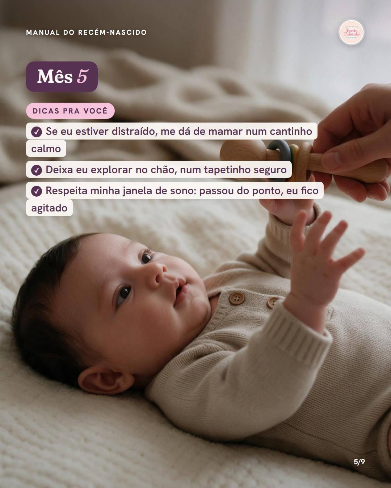
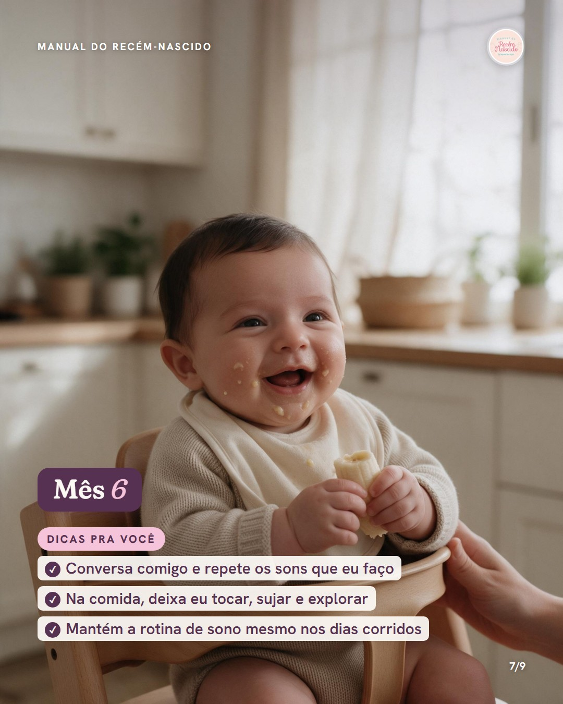
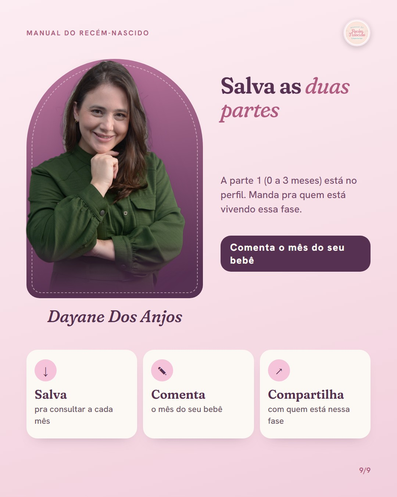

O que seu bebê está tentando te dizer: parte 2
Continuação do "comenta PARTE 2" · template voz do bebê · 4 a 6 meses · 9 lâminas · mesmo bebê da parte 1 · arraste pro lado






LegendaPrometido é cumprido: a parte 2 chegou 🤍
Do 4º ao 6º mês seu bebê muda muito. Começa a rolar, ri alto, estranha gente nova, se distrai na mamada e o sono dá uma mexida. Não é manha: é ele crescendo.
Salva pra consultar a cada mês. A parte 1 (0 a 3 meses) está no perfil.
Me conta nos comentários: em qual mês seu bebê está agora? 💛
#recemnascido #desenvolvimentoinfantil #sonodobebe #primeiroscuidados #maedeprimeiraviagem #manualdorecemnascido